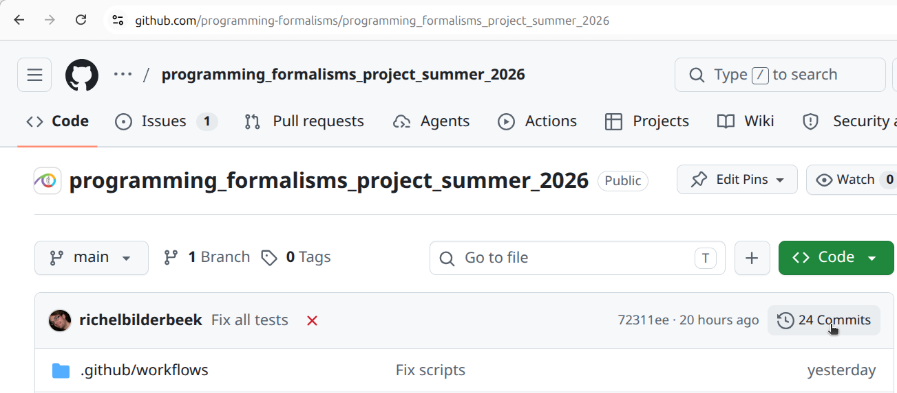
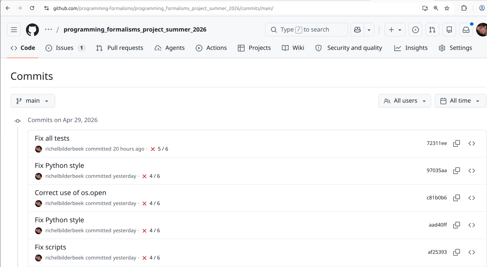
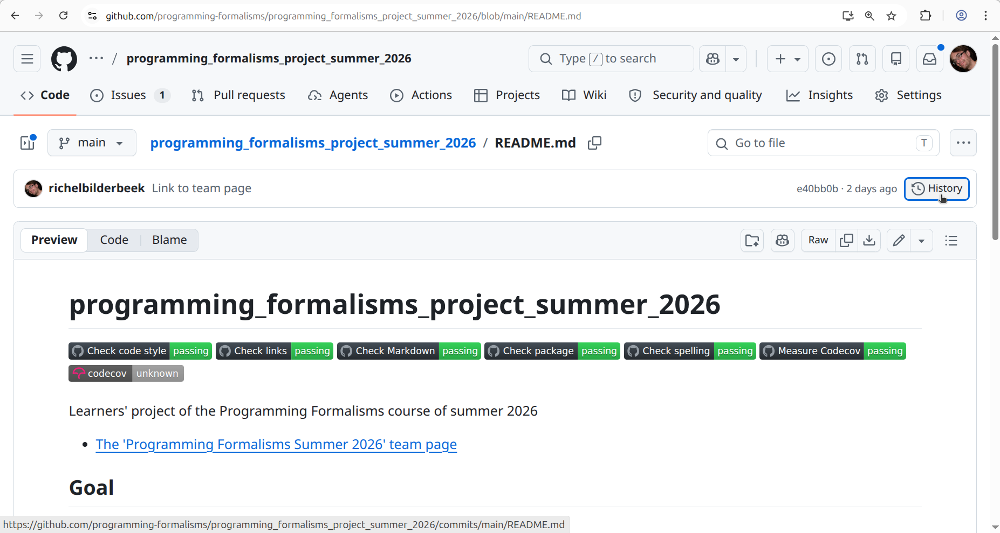
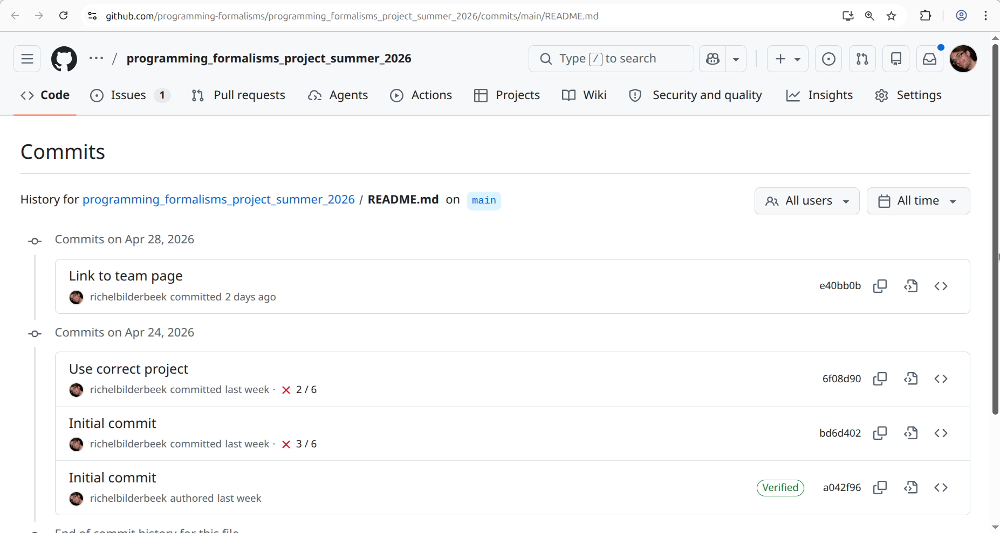
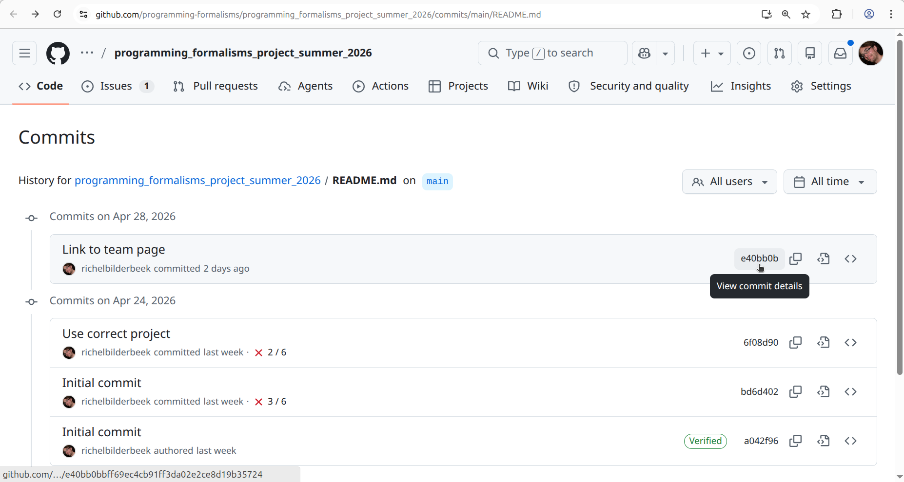
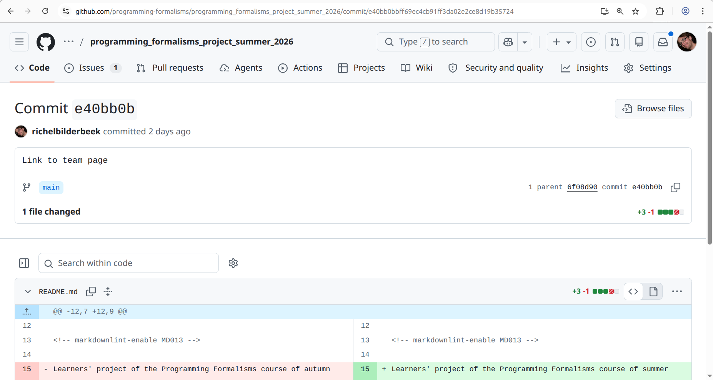

Version control¶
Learning outcomes
Learners ...
- understand what version control is
- can see the history of a project
- experience a problem with the repository web interface
- understand when to commit
For teachers
Prior:
- What is meant by 'Version control'?
- What is a version control system?
- Could you name a tool or program that is a version control system?
- What is a commit?
- What is a commit hash?
- When should you commit?
What is version control?¶
Version control is the tracking of the different states that your file are in over time.
For example, when you modify a file, it adds this operation to the history of what happened to your files. As such a modification adds history, this step can also be undone. Hence, when you use version control, you can undo changes.
This also holds true for file deletion: deleting a file adds history. Hence, when you use version control, deleting a file is reversible.
Why is version control important?¶
It allows you:
- see the history of your files
- undo every mistake
This allows you to work together, as no collaborator can truly destroy your work.
What does the literature say?¶
- Use version control for all production artifacts
[Forsgren et al., 2018] - Use a code hosting website with version control
to track your projects
[Perez-Riverol et al., 2016]. The articles recommends GitHub to do so. - In machine learning research, use versioning for data,
the machine learning model, its configuration and
its training scripts
[Serban et al., 2020] - Use code versioning
[Visser et al., 2016] - As a best practice in scientific computing, use a version control system
[Wilson et al., 2014] - As a good enough practice in scientific computing, use a version control system
[Wilson et al., 2017] - Always use version control
[Thomas and Hunt, 2019]
The file status in version control¶
From a version control perspective,
a file one of these Three Stages [Chacon and Straub, 2014] (chapter 1.3,
paragraph 'The Three Stages'):
| File status | Description |
|---|---|
| Modified | File(s) that are different than the online version |
| Staged | File(s) on the stage |
| Committed | File(s) that are part of a change |
There are two more statuses:
| File status | Description |
|---|---|
| Untracked | File(s) without version control |
| Unmodified | File(s) that are identical to the online version |
Here is the cycle of these file statuses:
graph TB
untracked
modified
staged
commited
unmodified
untracked --> modified --> staged --> commited --> unmodified --> modifiedThe verbs in version control¶
These are the verbs used in a version control system:
| Verb | Description |
|---|---|
| status | Get the status |
| clone | Download |
| add | Stage one or more files |
| commit | Give a name to the change(s) made to the staged file(s) |
| push | Upload |
| pull | Update |
| fetch | Check for update of online repository |
| sync | Update local and online code to be the same |
Which verbs are used depends on the program to do version control with. These verbs are used in a cycle.
Here are two cycles of the verbs used in version control:
graph TB
classDef optional_node stroke-dasharray: 5 5
subgraph version_control[Our version control system]
direction TD
git_clone[Clone] --> git_add[Add] --> git_commit[Commit] --> git_push[Push] --> git_pull[Pull] --> git_add
end
subgraph ide[Our integrated development environment]
direction TD
ide_clone[Clone] --> ide_add[Add]:::optional_node --> ide_commit[Commit] --> ide_fetch[Fetch] --> ide_sync[Sync] --> ide_add
endThe dashed node at 'Add' indicates that this verb can be 'removed' by the IDE. Then, the IDE will allways stage all files in a commit for you.
Exercises¶
Exercise 1: view the learners project history from the web interface¶
The learners project has a history. Search the web interface on how to view it. Tip: look for the word 'Commits'. View it using the web interface.
Where is it?
It is at the top-right side:

How does it look like?
It will look similar to this:

Now we have seen a commit history, how would you define what a commit is?
Answer
The answer is similar to this definition:
A commit is one or more changes to one or more files that has a short message that describes the change(s).
Judge the commit messages. What would be your rule for a good commit message?
Answer
This is not an easy answer, as the academic literature is divided.
However, a common theme is that a good commit messages describes:
- What: the summary of the code change
- Why: the motivation/reason behind it
Then recommended is:
- A good commit message should have both
[Li and Ahmed, 2023] - A good commit message can be either
[Tian et al, 2022]
Would I (Richel) come up with a rule, it would be: a commit message should match what you would say to a human to help him/her understand the reason of the change in a place where communication is hard (e.g. a place with loud music, so that you need to yell, while having a sore throat)
Exercise 2: change a file using the GitHub web interface¶
Change a file you created in the learners folder (if there is none,
create one).
View the history of the file.
Where do I need to click?
Click at the top-right, on the 'History' button:

How does it look like?
You will see something similar to this:

Assume you want to undo/revert the last commit. To do so (without going into detail) you will need the commit hash, i.e. the unique ID for your commit. Find and click on the latest commit hash of your file
Where do I need to click?
Click at the top-right, at the hexadecimal number.

What do you see?
Answer
You see the commit details.

In which scenario is it useful to see the commit details?
Answer
When you want to know what were the exact changes of a certain commit.
Exercise 3: change a file twice at the same time¶
Imagine two people editing the same file using the web interface.
The content of the file, before editing, was:
The first person intends to commit this text:
The second person intends to commit this text:
The first person then commits. Then the second person commits.
What would you say should happen?
Answer
My feeling is that the changes should be merged to:
Test this. What happens?
Answer
The final text will be the text submitted by the second person.
Why is this a problem?
Answer
Because it completely ignored the work of the first person.
This problem is solved better when using an integrated development environment or when using the version control system locally.
Let's say we accept that this problem exists. How do we reduce the problem of this?
Answer
By committing often.
The manta goes:
Commit early, commit often
Or 'Take small steps - always' [Thomas and Hunt, 2019] (tip 42).
References¶
-
[Chacon and Straub, 2014]Chacon, Scott, and Ben Straub. Pro git. Springer Nature, 2014. Book homepage. -
[Forsgren et al., 2018]Forsgren, Nicole, Jez Humble, and Gene Kim. Accelerate: The science of lean software and devops: Building and scaling high performing technology organizations. IT Revolution, 2018. -
[Perez-Riverol et al., 2016]Perez-Riverol, Yasset, et al. "Ten simple rules for taking advantage of Git and GitHub." PLoS computational biology 12.7 (2016): e1004947. Paper homepage -
[Serban et al., 2020]Serban, Alex, et al. "Adoption and effects of software engineering best practices in machine learning." Proceedings of the 14th ACM/IEEE International Symposium on Empirical Software Engineering and Measurement (ESEM). 2020. Paper homepage -
[Thomas and Hunt, 2019]Thomas, David, and Andrew Hunt. The Pragmatic Programmer: your journey to mastery. Addison-Wesley Professional, 2019. -
[Visser et al., 2016]Visser, Joost, et al. Building software teams: Ten best practices for effective software development. " O'Reilly Media, Inc.", 2016. -
[Wilson et al., 2014]Wilson, Greg, et al. "Best practices for scientific computing." PLoS biology 12.1 (2014): e1001745. Paper homepage -
[Wilson et al., 2017]Wilson, Greg, et al. "Good enough practices in scientific computing." PLoS computational biology 13.6 (2017): e1005510. Paper homepage